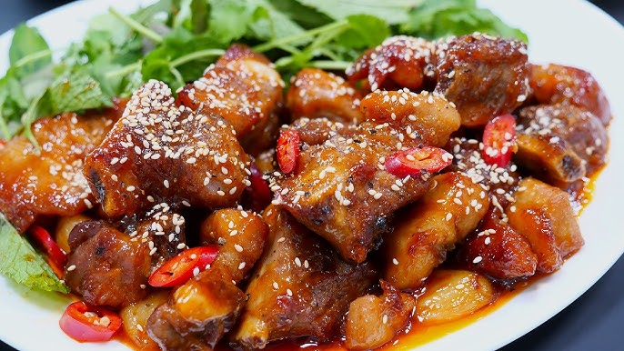

Suon Xao Chua Ngot (Vietnamese sweet and sour pork ribs) is a deeply comforting, vibrant dish that perfectly balances tangy, sweet, and savory notes. Unlike Western versions that often rely on heavy batter and food coloring, this authentic Northern Vietnamese recipe highlights tender, bite-sized pork ribs that are deeply browned and simmered in a glossy, aromatic glaze. The magic lies in the sauce - a flawless harmony of fish sauce, sugar, vinegar (or tamarind), and a touch of tomato paste or fresh tomatoes for that naturally bright red hue. As the sauce reduces, it clings beautifully to the ribs, resulting in a sticky, deeply flavorful dish that makes a steaming bowl of jasmine rice absolutely irresistible.
Place the rib pieces in a pot of cold water with a pinch of salt. Bring to a boil for 3 minutes to draw out impurities. Drain, rinse thoroughly under cold water, and pat the ribs dry.
In a small bowl, whisk together the fish sauce, sugar, vinegar, tomato paste (or chopped tomato), water, and black pepper until the sugar completely dissolves. Set it aside.
Heat 1 tbsp of oil in a large skillet over medium-high heat. Add the ribs and sear them until they develop a beautiful, golden-brown crust on all sides. Remove the ribs from the skillet and set aside, leaving a little fat in the pan.
Turn the heat down to medium. Toss the minced garlic and shallots into the remaining hot fat. Stir-fry for about 1 minute until fragrant and lightly golden, being careful not to let them burn.
Return the ribs to the skillet. Pour the sweet and sour sauce mixture over them and stir well. Turn the heat down to low, cover, and let it simmer for 15 minutes until the ribs are tender. Remove the lid and turn the heat up slightly, stirring constantly until the sauce reduces into a thick, sticky, glossy glaze that coats every rib. Toss in the green onions and chillies right at the end and serve hot!
Plate the ribs onto a plate and optionally garnish with some sesame seeds and dig in!